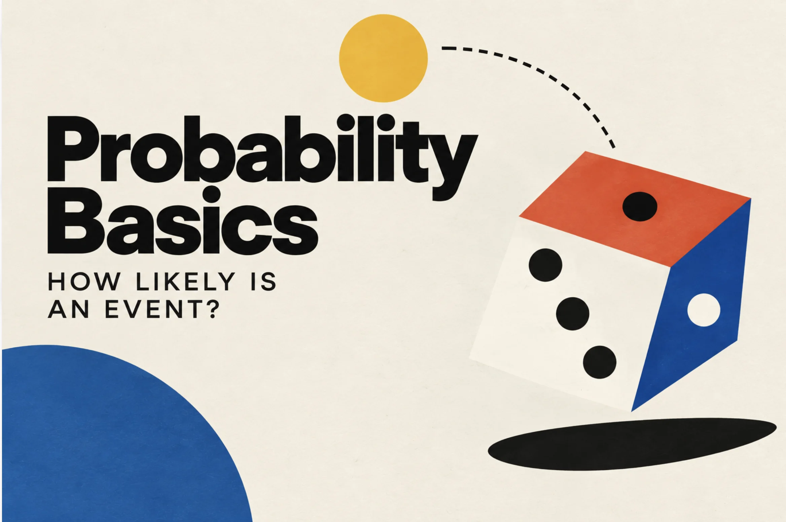
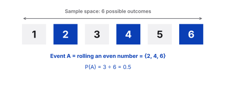
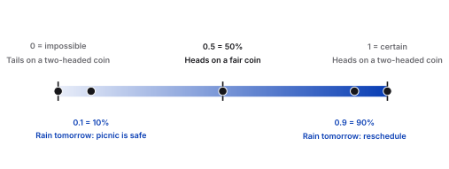
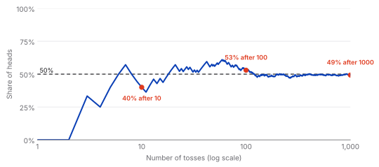
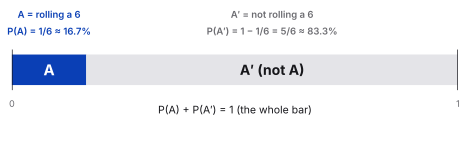
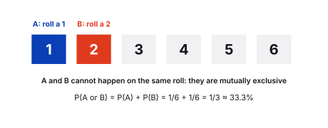
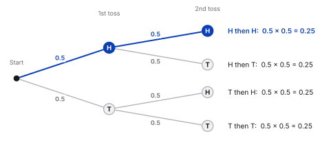

Statistics
Probability Basics: How Likely Is an Event?

Probability is the language we use to talk about uncertainty. Before any forecast, A/B test or risk estimate, there are three simple building blocks: the random experiment, the outcome and the event.
The building blocks
Random experiment
A random experiment is any process whose result can't be predicted with certainty in advance. Tossing a coin or rolling a die are the classic examples: before you do it, you can't know whether you'll get heads or tails, a 3 or a 6. Every random experiment has three things in common:
- More than one possible result. If there is only one, there is nothing to predict.
- Results you can list in advance. You know the possibilities before you start.
- Chance decides. Which of the possible results happens depends on luck.
Outcome
An outcome is one single result of the experiment. A die has six possible outcomes: 1, 2, 3, 4, 5 and 6.
Event
An event is a group of one or more outcomes we care about. "Rolling an even number" is an event made of the outcomes 2, 4 and 6. "Rolling an odd number" is another event: 1, 3 and 5. Probability always belongs to an event: it tells us how likely that group of outcomes is.
| Experiment | Possible outcomes | Example event |
|---|---|---|
| Toss a coin | Heads, tails | Getting heads |
| Roll a die | 1, 2, 3, 4, 5, 6 | Rolling an even number (2, 4, 6) |

Events can also be related to each other. Two types come up again and again:
Type 1
Mutually exclusive events
They cannot happen at the same time.
Example: rolling a 1 and rolling a 2 on a single die roll.
Used in the addition rule
Type 2
Independent events
One event does not affect the probability of the other.
Example: two separate coin tosses.
Used in the multiplication rule
The probability of an event
Probability is a number from 0 to 1, or equivalently a percentage from 0% to 100%.
- 0 (0%) means the event cannot happen.
- 1 (100%) means the event is certain.
- Close to 0, say 0.05, means it is unlikely. Close to 1, say 0.95, means it is very likely.
- 0.5 (50%) means it is just as likely to happen as not to happen.

Knowing a probability helps with decisions under uncertainty. With a 10% chance of rain tomorrow you can plan the picnic with confidence. With 90%, you'd better find another day.
How to calculate it
When every outcome is equally likely, the probability of an event is the number of outcomes that count as success divided by the total number of possible outcomes. This is called classical probability.
P(event) = number of desired outcomes ÷ total number of possible outcomes
Watch out
This formula only works when all outcomes are equally likely, as with a fair coin or a fair die. For a loaded die, it would give the wrong answer.
Example: coin toss
A fair coin has two equally likely outcomes, and one of them is heads:
P(heads) = 1 ÷ 2 = 0.5 = 50%
Now take a trick coin with heads on both sides. Every toss shows heads, so P(heads) = 100% and P(tails) = 0%.
Example: die roll
To roll a 3 with a fair die, there is one favourable outcome out of six:
P(3) = 1 ÷ 6 ≈ 0.167 ≈ 16.7%
For the event "rolling an even number" there are three favourable outcomes, so P = 3 ÷ 6 = 0.5.
Common confusion: what 50% does and doesn't mean
Saying that P(heads) = 50% is not a promise about any short series of tosses. Ten tosses of a fair coin can easily give 4 heads and 6 tails, or 7 and 3. The 50% describes the long run: the more you toss, the closer the share of heads tends to get to one half.

Probability notation
In textbooks and technical documents, probability is written in a compact form. P stands for probability, and capital letters such as A and B name events:
- P(A) is the probability of event A, and P(B) the probability of event B.
- A′ (read "A prime" or "not A") is the complement of A: the event that A does not occur.
- For any event A: 0 ≤ P(A) ≤ 1.
- If P(A) > P(B), A is more likely than B. If P(A) = P(B), they are equally likely.
Basic probability rules
The complement rule
An event either occurs or it doesn't, so the two probabilities always add up to 1. That gives us the complement rule: the probability that an event does not occur is 1 minus the probability that it does.
P(A′) = 1 − P(A)
If the chance of rolling a 6 is 1/6, the chance of not rolling a 6 is 1 − 1/6 = 5/6, about 83.3%. And if there is a 10% chance of rain tomorrow, there is a 90% chance it stays dry.

The addition rule
The addition rule applies to mutually exclusive events. The probability that either A or B occurs is the sum of their individual probabilities:
P(A or B) = P(A) + P(B)
Example: the probability of rolling a 1 or a 2 is 1/6 + 1/6 = 2/6 = 1/3, about 33.3%.

If the events can overlap
When two events can happen together, adding their probabilities counts the overlap twice, so you subtract it once: P(A or B) = P(A) + P(B) − P(A and B). For mutually exclusive events there is no overlap, which is why the simple version works.
Independent events: the multiplication rule
The multiplication rule applies to independent events. The probability that both A and B occur is the product of their probabilities:
P(A and B) = P(A) × P(B)
Typical examples are dice and coins, where one outcome has no influence on the next.
Example: the probability of getting heads on two tosses in a row is 0.5 × 0.5 = 0.25, or 25%. The same logic works across different experiments: heads on a coin and a 6 on a die has probability 1/2 × 1/6 = 1/12, about 8.3%.

Summary of the rules
| Rule | Formula | Use it when |
|---|---|---|
| Complement | P(A′) = 1 − P(A) | You want the probability that an event does not happen |
| Addition | P(A or B) = P(A) + P(B) | A and B are mutually exclusive |
| Multiplication | P(A and B) = P(A) × P(B) | A and B are independent |
Together, these rules let us describe and calculate probabilities for different types of relationships between events, which is exactly what comes up again and again in data analysis.
Key takeaway
Probability puts a number between 0 and 1 on how likely an event is. When outcomes are equally likely, divide the favourable outcomes by all possible outcomes. Three rules go a long way: the complement rule for "not A", the addition rule for mutually exclusive events and the multiplication rule for independent events. Data professionals use them to help others make informed decisions about uncertain events.